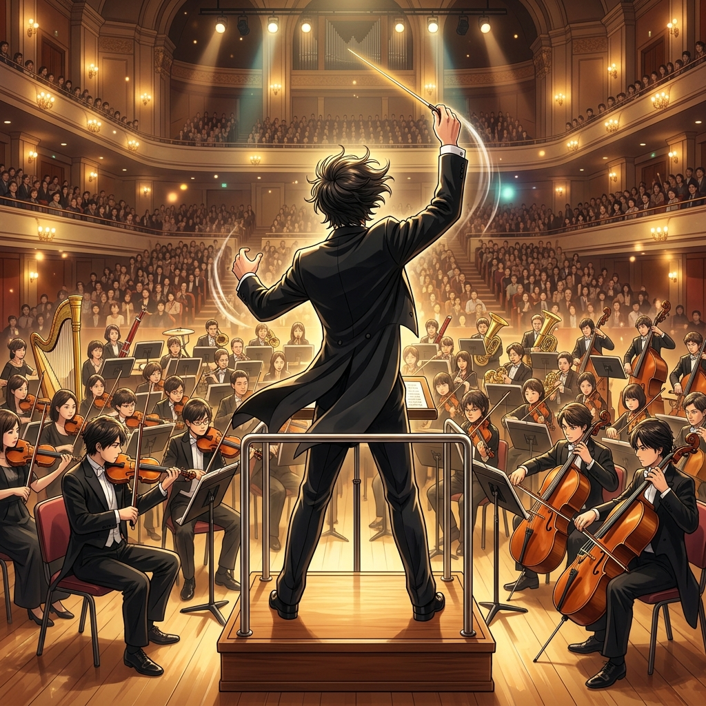
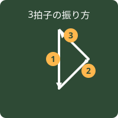
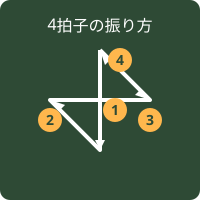
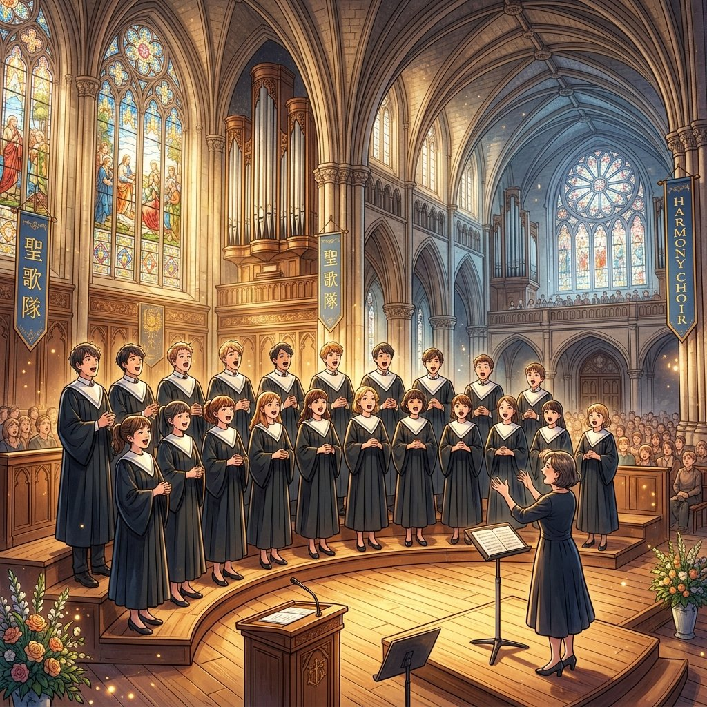

中学音楽（歌唱技術・楽典）
音楽の知識④ (指揮法・歌唱法・声域と合唱)
指揮者の役割と拍子の振り方、声域（パート）の分類、様々な合唱や声楽の演奏形態、そして歌うときの理想的な姿勢と呼吸法を解説します。実技試験や定期テストで空欄補充として出題されるポイントを網羅しています！
1. 指揮者の役割と振り方

演奏全体の拍子、テンポ、強弱を示し、音楽表現をコントロールする指揮者。
① 演奏中の指揮者の役割
- 正しい役割：曲の拍子やテンポ、強弱を示すこと、出だしや終わりのタイミングを合わせること、曲の雰囲気や感情を演奏者に伝えること。
- 誤った役割（ひっかけ！）：「合唱の練習スケジュールを決める」のは指揮者の演奏中の仕事ではありません。
② 指揮の振り幅による表現指示
- 腕を「小さく」振る ➔ 弱く演奏することを求める。
- 腕を「大きく」振る ➔ 強く演奏することを求める。
③ 拍子ごとの手の軌道（軌跡）

3拍子の軌道
下 ➔ 外側 ➔ 上 の順に振る

4拍子の軌道
下 ➔ 内側 ➔ 外側 ➔ 上 の順に振る
2. 拍子の分類（単純拍子と複合拍子）
- 単純拍子（たんじゅんひょうし） ➔ 4分の2拍子や4分の3拍子などのように、1拍を2等分できる基本的な音符で打つ拍子。
- 複合拍子（ふくごうひょうし） ➔ 8分の6拍子などのように、1拍が3等分される（付点音符を1拍とする）拍子。
3. 声域（パート）と合唱形態

声域によるパート分けの図。
① 声域の分類
- 女声（じょせい）：高い ➔ ソプラノ、中間 ➔ メッゾ ソプラノ、低い ➔ アルト
- 男声（だんせい）：高い ➔ テノール、中間 ➔ バリトン、低い ➔ バス
② 合唱の編成パターン（テスト穴埋め必出！）
- 女声三部合唱 ➔ ソプラノ、メッゾ ソプラノ、アルト
- 男声三部合唱 ➔ テノール、バリトン、バス
- 混声三部合唱 ➔ ソプラノ、アルト、男声（※中学の合唱曲で最も多い編成です）
- 混声四部合唱 ➔ ソプラノ、アルト、テノール、バス（※大人や高校生以上の最も標準的な合唱編成です）
4. 声楽のさまざまな演奏形態
- 独唱（どくしょう／ソロ） ➔ 1人で歌う演奏形態。
- 斉唱（せいしょう／ユニゾン） ➔ 2人以上で、同じ旋律をいっせいに歌う演奏形態。
- 輪唱（りんしょう） ➔ 同じ旋律を、一定の間をおいて追いかけるように歌う演奏形態。
- 重唱（じゅうしょう） ➔ 2つ以上の声部を、それぞれ1人ずつで歌い合わせる演奏形態（二重唱＝デュエット、四重唱＝カルテット）。
- 合唱（がっしょう／コーラス） ➔ 複数の人が、複数の声部に分かれて（1パート複数人で）歌い合わせる演奏形態。
5. 正しい歌い方（姿勢と呼吸法）
歌唱表現や発声を豊かにするための、体全体のコントロール方法です。
- 視線（しせん） ➔ 声を遠くへ響かせるため、やや上向きにするのが理想的です。
- 表情（ひょうじょう） ➔ 明るく響く声を出すため、眉（まゆ）や頬（ほお）を上げるようにします。
- 息の吸い方（呼吸法） ➔ 花の香りをかぐような感じで、鼻と口から素早く吸います。空気はおなかだけでなく、背中にも入れる感じ（腹式呼吸の意識）で下半身全体を膨らませます。
- 息の吐き方 ➔ 息が途中で切れないよう、ゆっくりと、一定のペースでむらなく吐きます。
- 立ち姿（姿勢） ➔ 肩の力を抜き、上半身はリラックスさせます。両足はぴったり閉じず、軽く開いて立ち、下半身を安定させます。
🔥 定期テスト対策・暗記のコツ
① 3拍子と4拍子の指揮の動き（実技でも出題！）
「3拍子 ➔ 下 ➔ 外 ➔ 上」
「4拍子 ➔ 下 ➔ 内 ➔ 外 ➔ 上」です。
特に4拍子の「2拍目が内側」「3拍目が外側」に進む順番がテストで狙われやすいので、鏡の前で実際に右手を動かして軌道を覚えましょう！
② 斉唱と合唱、重唱の違い
「全員で同じメロディを歌うのは斉唱（せいしょう）」
「分かれてハモるが、各パート1人だけなのは重唱（じゅうしょう）」
「分かれてハモり、各パート複数人で歌うのが合唱（がっしょう）」です。この言葉の定義分けは記述や選択問題の定番です。
③ 歌唱時の「花の香りをかぐように」という表現
息を吸うときのコツとして、テストで「〇〇の香りをかぐように」と穴埋めさせることがあります。正解は「花」です。この表現によって喉が自然と開き、リラックスして大量の息を瞬時に吸い込めるようになります。